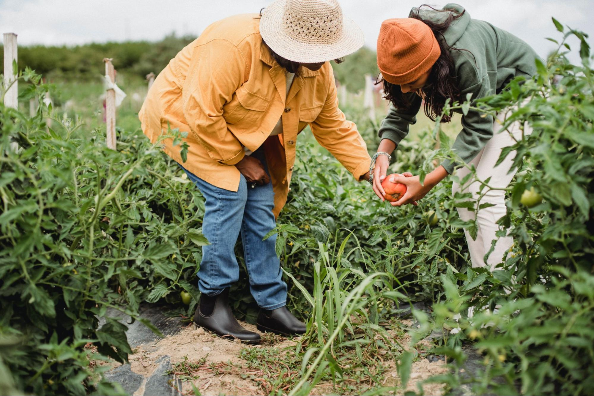
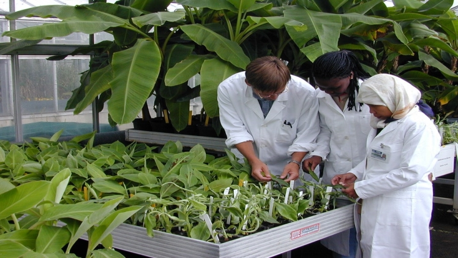
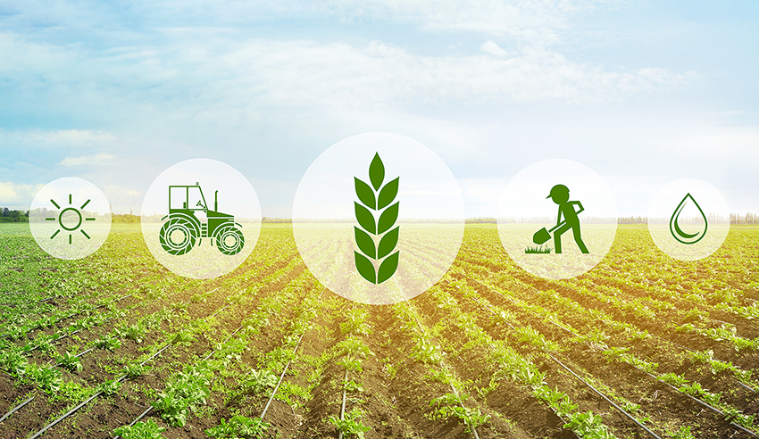

Introducción
Bienvenidos a Industries Agro. Nos dedicamos a impulsar el desarrollo del sector agropecuario con soluciones innovadoras, sostenibles y eficientes. Trabajamos de la mano con productores, técnicos y comunidades rurales para optimizar procesos agrícolas, mejorar los rendimientos y promover prácticas responsables con el medio ambiente.
Acerca De Nosotros
En Industries Agro, creemos en el poder del campo como motor del desarrollo. Somos una empresa dedicada a brindar soluciones integrales en el área de la agronomía, con el objetivo de mejorar la productividad, sostenibilidad y rentabilidad del sector agrícola.
Contamos con un equipo multidisciplinario de profesionales apasionados por la tierra y comprometidos con la innovación. Nuestra experiencia abarca desde el asesoramiento técnico en cultivos, manejo de suelos y fertilización, hasta la implementación de tecnologías agrícolas de última generación.
Nos diferenciamos por nuestro enfoque personalizado, adaptando nuestras estrategias a las necesidades específicas de cada cliente, finca o cultivo. A través de la investigación, la capacitación continua y el trabajo en campo, buscamos transformar la agricultura en una actividad más eficiente, responsable y próspera.
Nuestras Metas
En Industries Agro nos hemos propuesto objetivos claros que guían nuestro crecimiento y compromiso con el agro:
- 🌱 Impulsar la adopción de tecnologías sostenibles en el 80% de nuestros clientes en los próximos 3 años.
- 📈 Aumentar la productividad agrícola de nuestros clientes en un 25% mediante asesoría técnica especializada.
- 🌎 Promover prácticas agrícolas amigables con el medio ambiente, reduciendo el uso de químicos nocivos en un 30%.
- 🤝 Fortalecer alianzas estratégicas con instituciones educativas y de investigación para innovar en el sector agropecuario.
- 🏆 Consolidarnos como líderes en servicios de agronomía en Centroamérica para el año 2030.
Contacto
En Industries Agro estamos siempre disponibles para ayudarte. Si deseas más información sobre nuestros servicios, asesoría personalizada o agendar una visita técnica, no dudes en comunicarte con nosotros:
- 📍 Dirección: 4ta Av 5-16, Santa Isabel 1, Zona 4 de Villa Nueva
- 📞 Teléfono: +502 7241 3896
- ✉️ Correo electrónico: contacto@industriesagro.com
- 🕒 Horarios de atención: Lunes a Viernes, de 8:00 a.m. a 5:00 p.m.
Encuéntranos en nuestras Redes Sociales:
- 🐦 X (Twitter)
- 🎵 TikTok